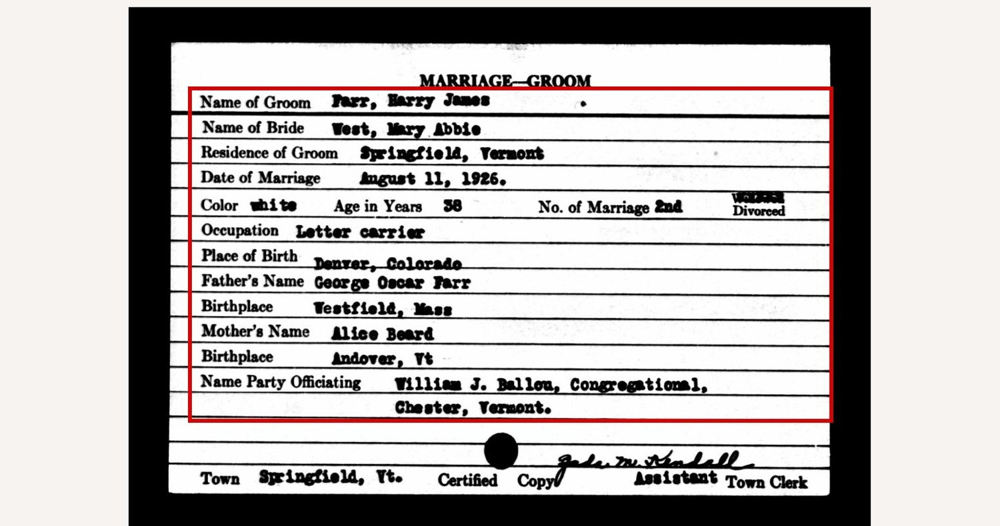
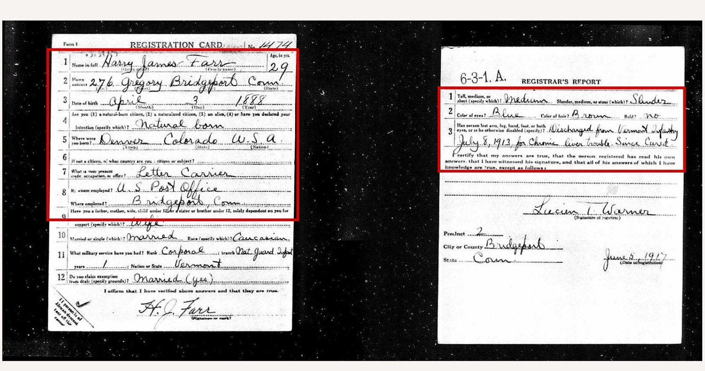
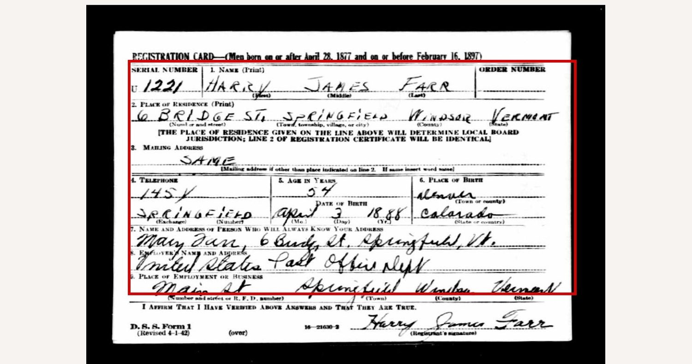
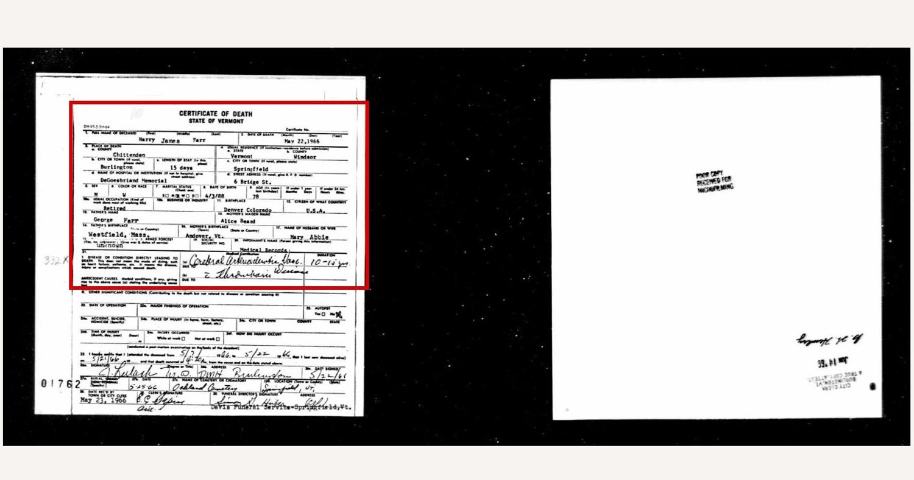
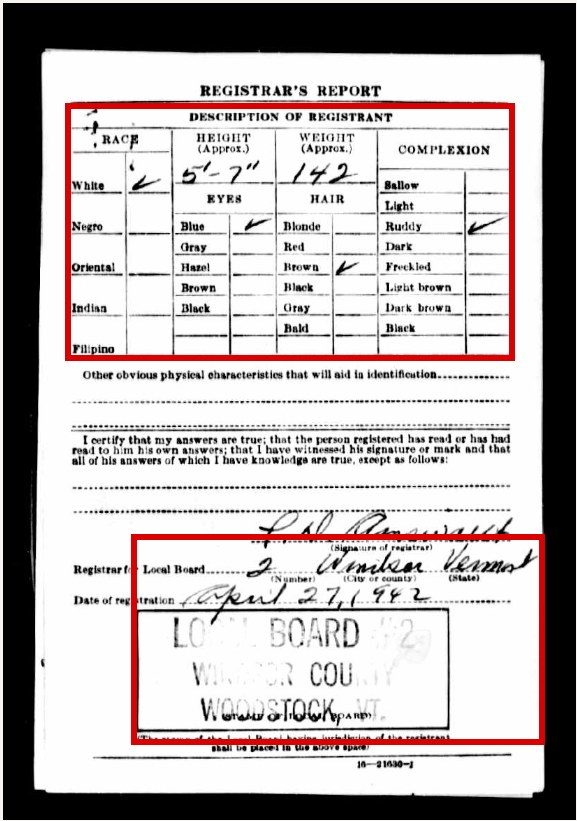
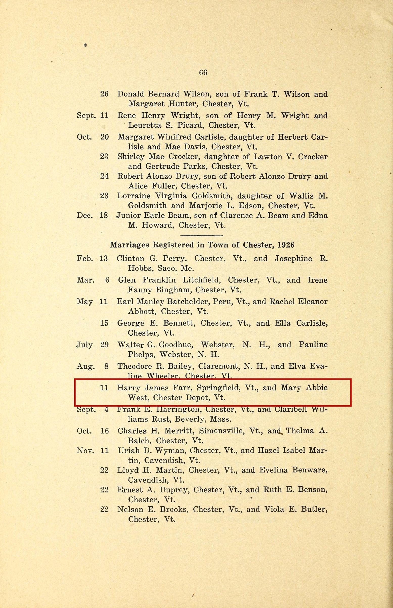
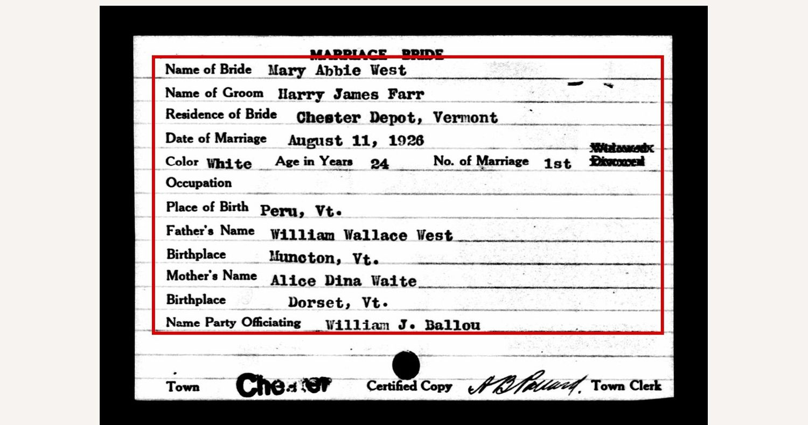
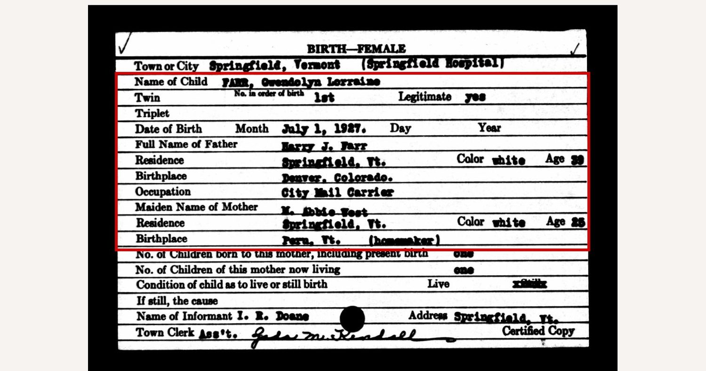
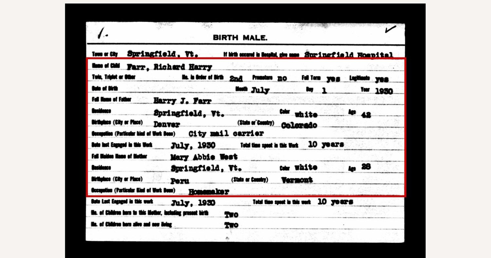

Farr, West and Seward
The Farrs
Gwendolyn (Farr) Magwire's parents were Harry James Farr and Mary Abbie (West) Farr. Her 1927 Vermont birth card says so, and so do two obituaries, so the link is confirmed.
Harry and Laura Mary Seward
Harry James Farr was born in Denver, Colorado, on April 3, 1888. His 1917 and 1942 draft cards and his 1966 death certificate give Denver and April 3, 1888, and his 1926 marriage card gives Denver and an age that fits. His 1926 marriage card names his parents as George Oscar Farr, born in Westfield, Massachusetts, and Alice Beard, born in Andover, Vermont, and his death certificate repeats George and Alice Beard. The informant on that certificate was the hospital's medical records office, so the parents are probable, not confirmed. On December 4, 1912, a Harry James Farr married Laura Mary Seward in Springfield, Vermont. The town register is the record of that wedding.
The 1912 groom and the Harry J. Farr of the 1950 census share a name and a town, and the age fits a man of about 24 in 1912. They are treated as the same man, which is probable until the 1912 marriage record's age and birthplace are read. Laura was his first wife. His 1926 marriage card says it was his second marriage and that he was divorced, so Laura's marriage ended in divorce. When, and where, is an open lead.
Harry served a year as a corporal in the Vermont National Guard infantry. On his June 5, 1917 draft card, filled in at Bridgeport, Connecticut, he gave 276 Gregory Street, said he was a letter carrier for the U.S. Post Office and was married, and the registrar wrote that he had been discharged on July 8, 1913 for chronic liver trouble. He was described as of medium height, slender, with blue eyes and brown hair. By 1926 he was back in Springfield, and his 1927 and 1930 children's birth cards call him a mail carrier. On his 1942 draft card, at age 54, he lived at 6 Bridge Street, Springfield, worked for the U.S. Post Office on Main Street, Springfield, and named Mary Farr as the person who would always know his address. The next image in the Vermont set, 3109, directly after the front of his card (3108), is the back of a 1942 card with no name on it. It describes a man 5 feet 7 inches tall and 142 pounds, with blue eyes, brown hair and a ruddy complexion, registered on April 27, 1942 for Local Board 2, Windsor County, at Woodstock. It is matched to Harry only by its position, so it is probable, not confirmed. It fits his 1917 description.
Harry died at DeGoesbriand Memorial Hospital in Burlington, Vermont, on May 22, 1966, aged 78, retired, residing at 6 Bridge Street, Springfield, as his Vermont death certificate states. It names his wife as Mary Abbie. That confirms the Social Security death index, which gave April 3, 1888 and May 1966. The index entry.






Mary Abbie West
Mary Abbie West, called Abby in the family, was born in Peru, Vermont, in 1901 or 1902, the daughter of William Wallace West and Alice Dina Waite, who was born in Dorset, Vermont. That comes from her 1926 marriage card, a single source, so her parents are probable. The card gives her father's own birthplace as a Vermont town whose spelling is hard to read, so it is not guessed here. In 1950 she was Mary A. Farr, wife of Harry J. Farr, a postal clerk in Springfield. Their daughter Alma is named on that census page. Alma is living, so her age is not repeated here, and she has no place of her own on the map. The census image is a public record and is not redacted.
Richard H. Farr's 2009 obituary names his parents as Harry James Farr and Mary Abbie West Farr, and names his sisters Alma and Gwendolyn. Gwendolyn's obituary names the same parents. Both children's Vermont birth cards, below, now confirm it: Gwendolyn's names Harry J. Farr and M. Abbie West, born in Peru, Vermont, and Richard's names Harry J. Farr and Mary Abbie West.
Harry and Mary Abbie were married at Chester, Vermont, on August 11, 1926. Chester's printed marriage list for 1926 gives Harry James Farr of Springfield and Mary Abbie West of Chester Depot. The Vermont marriage cards say the same: she was 24, it was her first marriage, and the Reverend William J. Ballou, a Congregational minister, married them. The same town report pays an Abbie West for teaching in the Chester schools that year, so she was very probably a teacher before she married. Gwendolyn was born the next year.
Family tradition: West cousins remembered summer visits with Aunt Abby and Uncle Harry, and a West family farm in Wells, Maine. Wells is a lead and is not on the map.



Gwendolyn, Richard and Alma
Gwendolyn Lorraine Farr was born at Springfield Hospital, Springfield, Vermont, on July 1, 1927, the first child of Harry J. Farr and M. Abbie West. On January 7, 1961 she married Howard Frank Magwire there. They made their home in West Springfield, Massachusetts. Their daughter is Tracy Jo Crosby. Gwendolyn died in Suffield, Connecticut, on September 6, 2009, after 48 years of marriage. Her obituary remembered her quilting, knitting and sewing. The obituary text and the guest book are not copied here. The guest book names living cousins. Read the obituary.
Richard Harry Farr was born at Springfield Hospital, Springfield, Vermont, on July 1, 1930, the second child of Harry J. Farr and Mary Abbie West. He served in the U.S. Navy from 1948 to 1952, married Doris Ann Elliott, lived on Cape Ann, and died at Rockport, Massachusetts, on May 11, 2009. Doris's details are not published. His obituary is the one that names Mary Abbie West Farr. The scan of that page is kept back. Read the obituary.


Alma (Farr) Cook is their sister, and a daughter of Harry and Mary Abbie. She is living. The tree gives her name and that relationship only.
Gwendolyn on the tree · Richard on the tree · Alma on the tree